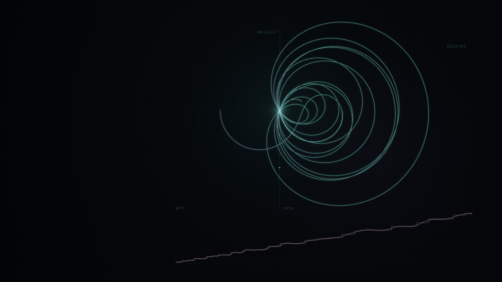
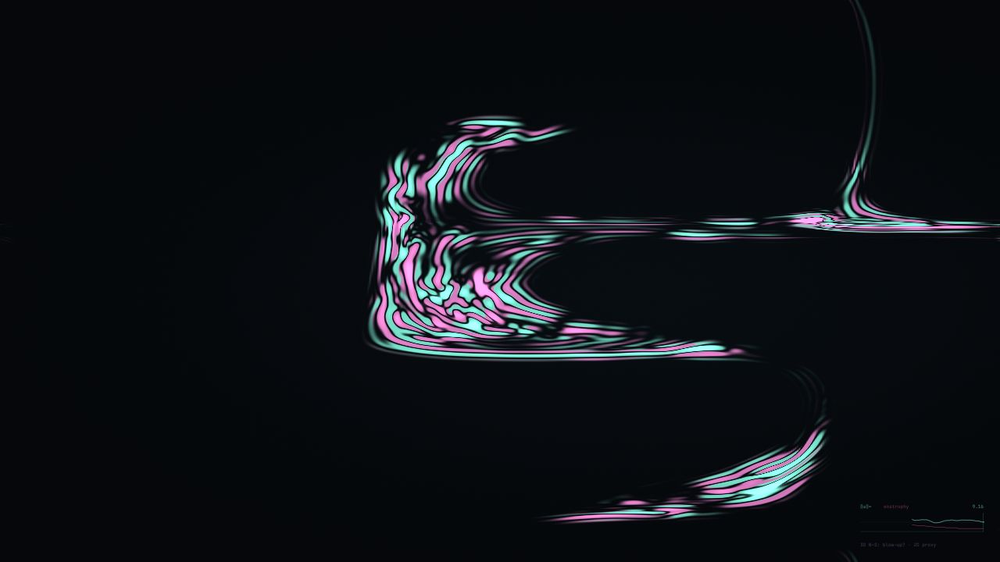
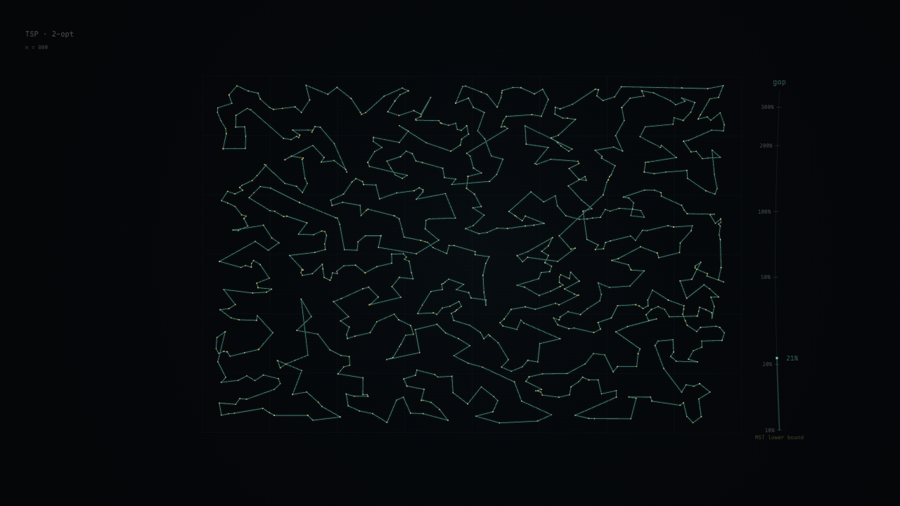
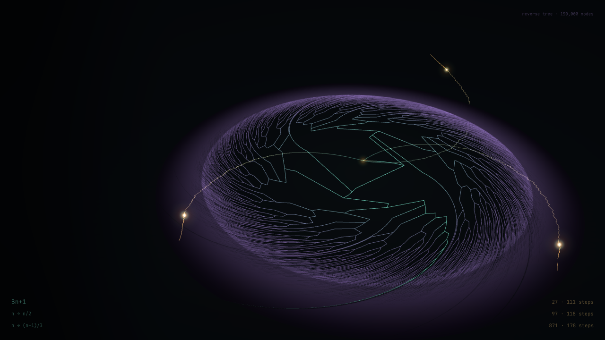
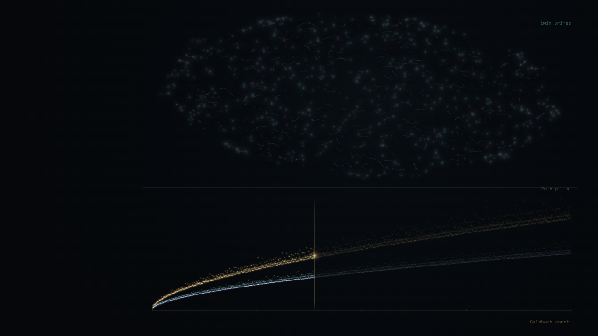
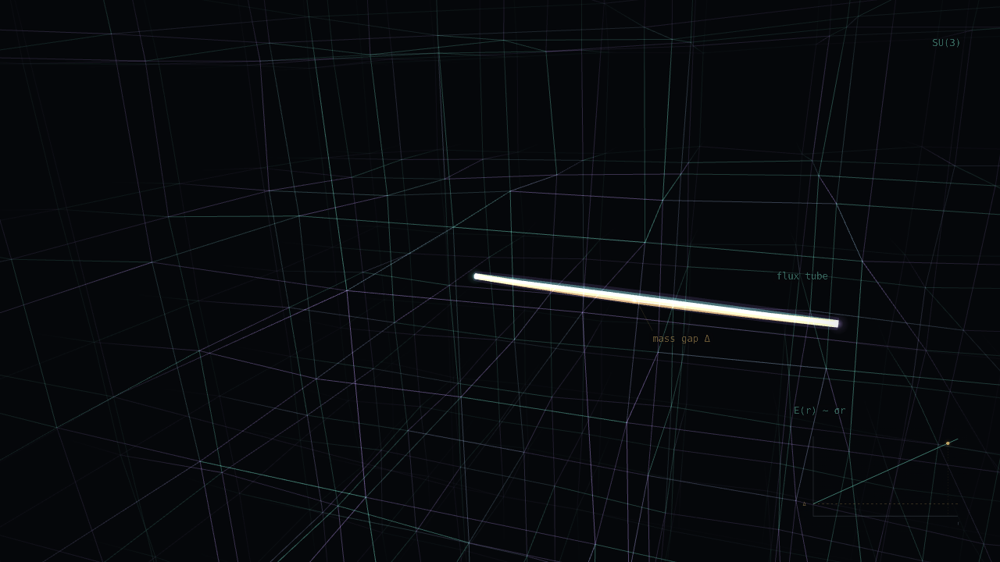
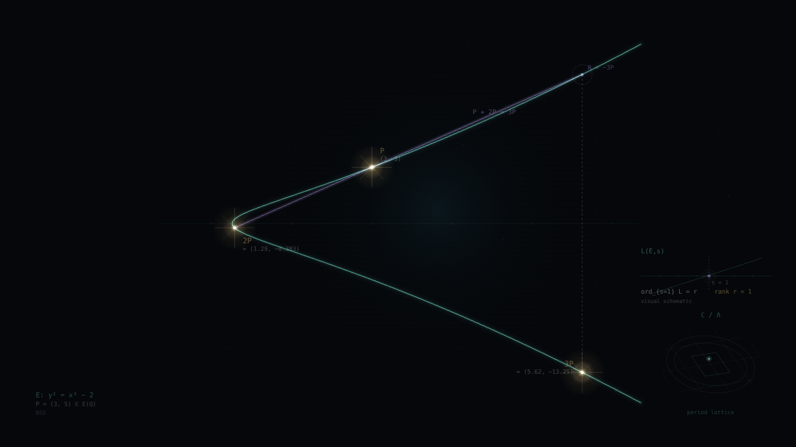
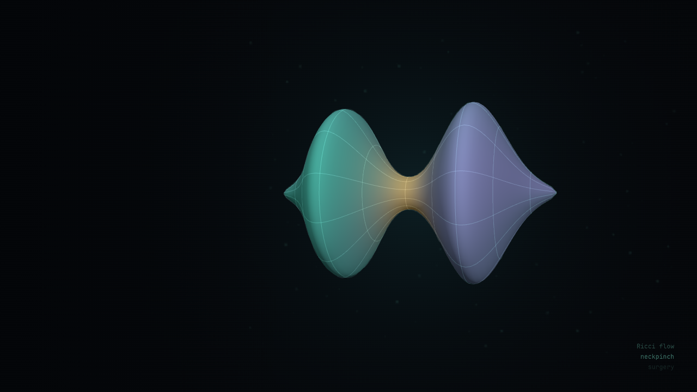
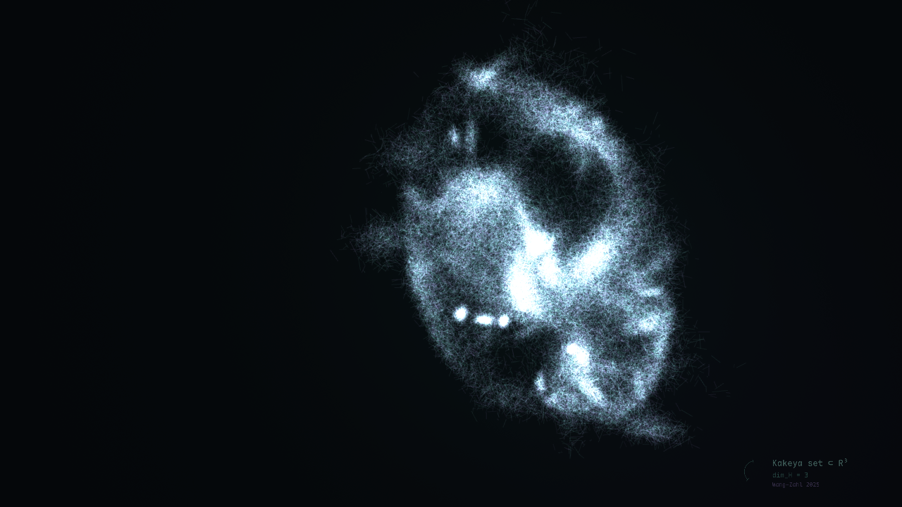
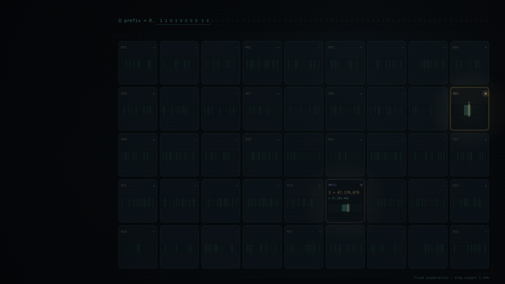

点击卡片打开全屏实时效果。全部为确定性循环，可直接录制为壁纸视频。

ζ(1/2+it) 与素数阶梯
临界线上的 ζ 曲线在零点处亮起，素数阶梯随显式公式的项数逐渐显形。

涡量细丝与爆破解监测器
暗色不可压涡量场中，细丝被拉伸、卷起、折叠；角落的极简监测器记录 ‖ω‖∞ 与 enstrophy 的缓慢爬升和偶发尖峰。

TSP 回路与下界差距
800 座城市在 2-opt 下缓慢解开交叉，右侧差距尺显示回路相对 MST 下界的余量。

3n+1 逆向树与已知边界
从 1 反向生长的 Collatz 树，托住三条坠向根部的著名冰雹轨迹。

Goldbach 彗星与孪生素数星座
素数在斐波那契盘面上缓慢旋转，孪生素数结成星座，Goldbach 彗星沿 2n = p + q 的素数对计数扫过夜空。

SU(3) 格点与线性势
半透明的 SU(3) 格点时间切片铺满背景，一根随夸克间距变细、变亮的通量管贯穿其中，最低驻波模式标出质量间隙。

有理点、群律与 L 函数
椭圆曲线 y² = x³ − 2 上的有理点以星子相连，弦–切线群律在暗色坐标中展开，右侧是复环面与 L 函数消失阶的极简示意。

neckpinch 与手术
哑铃形曲面在 Ricci 流下颈部收缩、断裂，随后手术补成两个球面，最后淡回起点。（曲面视觉代理，非 3D 流形数值解）

所有方向的针，几乎为空的并集
十一万八千根短针各指一方，叠成缓慢旋转的青紫色星云，在暗处留下几乎空无的孔洞。

图灵机墙与 Ω 的有限前缀
一整面微缩图灵机逐台被扫描，停机者在顶部为 Ω 的固定 64 位窗口贡献一位；BB(5) 冠军的步数计数器缓慢爬行。固定枚举下的有限前缀，视觉示意。